#mrandmrsgeeky verlanglijst
#mrandmrsgeeky verlanglijst

Aangezien we al 12 jaar samen wonen zijn we dus we niet uw gebruikelijke pasgetrouwd stel. We hebben al een hoop dingen die de meeste jonggehuwden nodig hebben, en omdat we geen zware dingen terug naar Londen willen vervoeren ontvangen we liever geld in plaats van cadeaus. Dit geld zal besteed worden aan de dingen hieronder voor ons huis, de vakantie en onze huwelijksreis.
PS: We zijn blij om je kado te accepteren tijdens de receptie in persoon, via PayPal op paypal@mrandmrsgeeky.com of op een andere manier als je misschien geneigd bent om ons een zak met centen te geven.
-
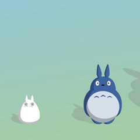
Studio Gibli Museum
Onze huwelijksreis zal naar Tokyo zijn en natuurlijk willen we graag het huis van Totoro bezoeken.
£75 -
Bullet Trein
We willen niet worden beperkt tot Tokyo dus we zouden graag Kyoto en Nagasaki bezoeken
£360-£500 -
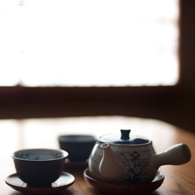
Japanse theeceremonie
Een reis naar Japan zou niet compleet zijn zonder een traditionele theeceremonie.
£90-£180 -
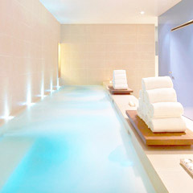
Japans spa hotel
Al dat reizen is vermoeiend dus we zouden graag een spa-hotel willen bezoeken om te ontspannen voor een dag of 2.
£180-£360 -
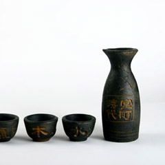
Sake Proeven
De prijs van dit is volledig afhankelijk van de hoeveelheid sake die we realistisch kunnen drinken.
£30-£60 -
Venetië gondel
Dit is toch wel het romantische hoogtepunt van onze vakantie deze zomer, en mogelijk gemaakt door jou!
£50-£100 -
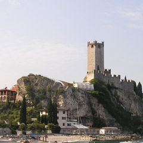
Malcesine kabelbaan
Op en neer de berg in Italië. Waarschijnlijk wel beter als we een jas meebrengen.
£40 -
Venetië museum pas
Zo vele musea, zo wijnig dagen, zo veel kunst, veel wow!
£60 -
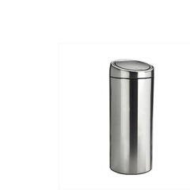
Curver prullenbak
We zeiden toch dat deze lijst coole dingen zou bevatten! Onze huidige bak is lelijk en is nogal klein. We hebben een mooiere nodig!
£100-£200 -
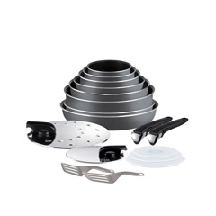
Pannen set
Onze huidige pannen hebben onze nieuwe vaatwasser niet overleefd, dus we zijn op zoek naar een nieuwe set.
£100-£200 -
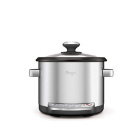
Multi cooker
Automatisch risotto en chili con carne zonder gedoe? Wij zijn overtuigt!
£90 -
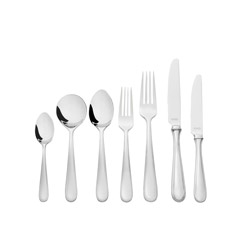
Bestek
We hebben het zelfde bestek al zo veel jaren dat er een hoop aan ontbreekt en we echt een passende set nodig hebben.
£80-£140 -
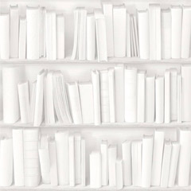
Mel's Bibliotheek
In 2014 zijn we begonnen aan Mel's bibliotheek maar op dit moment hebben we slechts een helft afgewerkt. Een trip naar IKEA is hard nodig.
£200-£400 -
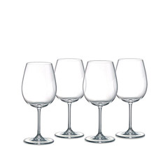
Wijnglazen
In de afgelopen 12 jaar hebben we een passende set wijn glazen gekocht.
£50-£150 -
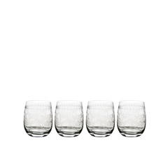
Glazen set
Net als onze wijnglazen zijn onze normale glazen ook niet in een goede vorm. We hebben een aantal nieuwe nodig.
£50-£150 -
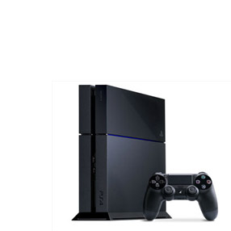
PS4
We beloven deze als laatste te zullen kopen, na onze vakanties, belooft.
£300